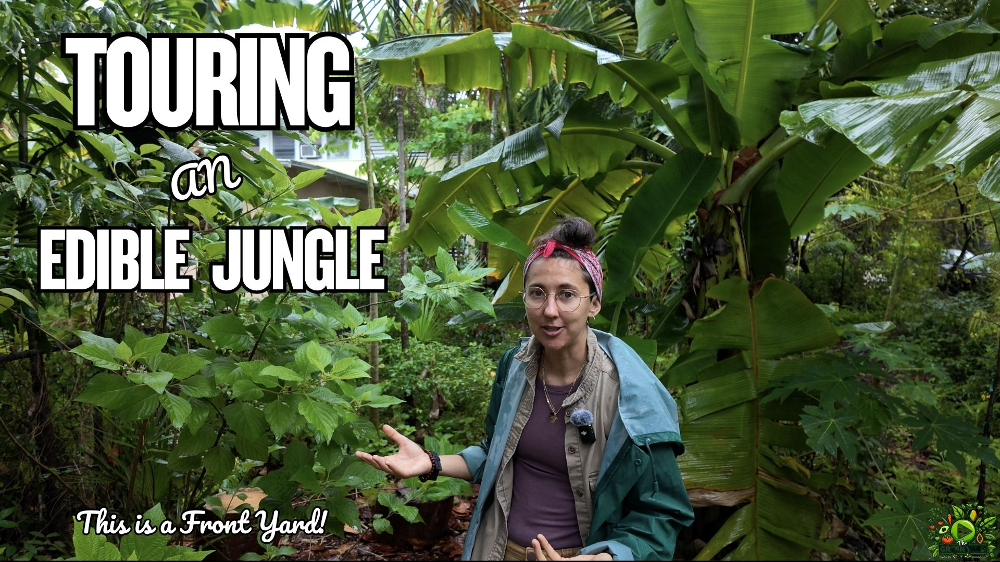

A Perennial Lemon-Flavored Tea Plant
Lippia alba forms a large perennial hedge and provides lemon-scented leaves for tea throughout the year with very little maintenance.
The Green Yard
July 30, 2026
July 30, 2026
Miami food forest, Finca Morada, Florida backyard food forest, Miami edible garden, tropical fruit trees Miami, Florida native plants, medicinal plants, perennial vegetables, syntropic agroforestry, chop and drop, community food forest, Miami permaculture, tropical backyard garden, food justice garden, plant propagation
Tour Finca Morada’s layered Miami backyard food forest, where tropical fruit trees, medicinal herbs, perennial vegetables, Florida native plants, wildlife habitat, biomass crops, and community-centered growing practices share the same landscape.
In the backyard portion of our visit to Finca Morada, Cris guides us through a dense edible landscape shaped by six years of planting, observation, propagation, pruning, and community care. Tropical fruit trees grow beside medicinal plants, Florida natives, perennial vegetables, pollinator species, biomass crops, and gathering spaces, creating a food forest that supports people, wildlife, and the wider community.
Finca Morada is not designed as a conventional backyard orchard. Instead, it functions as a layered living system where food, medicine, habitat, culture, education, and community all overlap. Fruit trees share space with perennial vegetables, medicinal herbs, native shrubs, pollinator plants, biomass species, and areas created for gathering and learning.
Many of the plants serve several purposes at once. Chaya can be eaten while also producing large amounts of material for chop-and-drop. Firebush feeds wildlife while helping bring butterflies and hummingbirds into the garden. Vetiver contributes biomass and remains productive in areas where other grasses struggle with shade. Pineapples fill gaps in the understory, while native plants create habitat around tropical fruit trees.
The result is a food forest that reflects a broader understanding of abundance. Productivity is measured not only by the amount of fruit harvested, but also by how well the landscape supports people, wildlife, relationships, education, and the sharing of plants throughout the community.
Lippia alba forms a large perennial hedge and provides lemon-scented leaves for tea throughout the year with very little maintenance.
Vetiver tolerates more shade than many other biomass grasses, allowing it to remain useful for chop-and-drop in a developing canopy.
Male papaya flowers support hummingbirds and hummingbird moths, while dead sections of the trunk can provide habitat for woodpeckers and other wildlife.
Many residential food forests focus primarily on producing fruit for a single household. Finca Morada takes a broader approach. While the garden certainly provides food, it also functions as a place for teaching, gathering, propagation, and community resilience. Throughout the tour, Cris explains how the landscape has gradually evolved into a space where neighbors can learn about edible plants, purchase propagated seedlings on a sliding scale, attend workshops, and discover species that are rarely found in conventional nurseries.
This philosophy changes how success is measured. Instead of asking, "How many pounds of fruit did this tree produce?" the more important question becomes, "How many people did this garden inspire?" Every cutting rooted, every seedling shared, and every workshop hosted allows the impact of the food forest to spread far beyond the property lines.
As more communities begin exploring local food production, gardens like Finca Morada demonstrate that a residential landscape can become a valuable educational resource while still remaining productive, beautiful, and ecologically diverse.
One of the defining characteristics of Finca Morada is the large number of medicinal species growing alongside tropical fruit trees. Rather than separating ornamental landscaping, food crops, and herbal plants into different spaces, they are woven together throughout the garden. This reflects a long tradition found across tropical regions where a home landscape supplies food, medicine, shade, and habitat all at the same time.
Visitors encounter plants such as Lippia alba, damiana, neem, noni, moringa, Cuban oregano, and several other herbs that have long histories of traditional use. While many of these plants are valued in cultures around the world, they are also appreciated simply because they are vigorous, resilient, and well adapted to South Florida's climate.
For gardeners interested in building resilient landscapes, medicinal plants often provide additional benefits beyond their traditional uses. Many flower for pollinators, tolerate heat, recover quickly from heavy pruning, and supply biomass that can be returned to the soil through chop-and-drop management.
Healthy food forests depend on healthy soil, and one of the easiest ways to improve soil is by continually producing organic matter within the garden itself. Instead of relying entirely on imported mulch, many food forest growers intentionally plant species whose primary job is to generate leaves and stems that can be cut and laid back onto the ground.
Throughout the tour, Cris highlights plants such as vetiver, chaya, and other vigorous growers that produce large amounts of biomass each year. As these plants are pruned, the material becomes mulch that protects the soil, slows evaporation, feeds microorganisms, and gradually releases nutrients back into the ecosystem.
This process is often called chop-and-drop. Rather than removing plant material from the garden, the nutrients remain on site where they continue cycling through the food forest. Over time this helps create deeper, healthier soils while reducing the need for outside inputs.
A productive food forest doesn't only support people—it also provides habitat for birds, insects, reptiles, and beneficial pollinators. Throughout Finca Morada, native shrubs, flowering herbs, mature trees, and intentionally retained dead wood create places where wildlife can feed, nest, and shelter.
One particularly interesting example is the male papaya tree featured in the tour. Although it never produces fruit, it continues flowering and provides nectar for hummingbirds and hummingbird moths. Rather than removing the tree because it isn't productive in the traditional sense, it remains an important part of the surrounding ecosystem.
This broader perspective reflects one of the core principles of food forest design: every species should contribute something to the system. Some plants provide fruit, others improve soil, others attract pollinators, and some simply create habitat that increases the overall health and resilience of the landscape.
Although tropical fruit trees often receive the most attention, much of the daily harvest from a food forest can come from perennial vegetables. Unlike annual crops that require frequent replanting, perennial greens continue producing for years while helping shade the soil and occupy otherwise unused spaces beneath the tree canopy.
Throughout Finca Morada, species such as Brazilian spinach, Surinam spinach, chaya, nopales, and arrowroot provide reliable harvests while requiring relatively little maintenance once established. These crops allow gardeners to harvest fresh greens throughout much of the year without disturbing the soil every season.
Layering perennial vegetables beneath fruit trees also increases the overall productivity of the landscape. Rather than leaving open ground, multiple edible species occupy different levels of the food forest, making efficient use of sunlight, water, and available growing space.
Like many successful subtropical gardens, Finca Morada demonstrates that water management is just as important as plant selection. During the tour, Cris discusses using graywater and thoughtful landscape design to support long-term plant health while reducing unnecessary waste.
In climates where periods of heavy rainfall are followed by dry weather, capturing and reusing available water helps create a more resilient garden. Combined with dense planting, living mulch, and continuous organic matter from chop-and-drop management, healthy soils retain moisture longer and reduce irrigation needs over time.
While every municipality has different regulations regarding graywater, the broader principle remains the same: keeping water cycling through the landscape instead of allowing it to leave the property.
One of the most inspiring aspects of Finca Morada is that the garden extends far beyond the plants growing on the property. Through propagation, seed saving, workshops, and a small nursery, many of the species featured throughout the tour continue spreading into other backyards across South Florida.
Rather than viewing rare edible plants as collector's items, Cris encourages sharing them with others. Cuttings become new trees, seedlings find new homes, and gardeners leave with both knowledge and plants that allow them to begin creating abundance where they live.
This philosophy highlights one of the greatest strengths of food forest gardening: every mature garden has the potential to become a nursery for future gardens. As plants are propagated and distributed, the impact of a single backyard continues expanding throughout the surrounding community.
Finca Morada contains an impressive diversity of edible, medicinal, and ecologically valuable species. During this tour we documented more than thirty plants representing tropical fruit trees, perennial vegetables, Florida native species, medicinal herbs, biomass crops, and pollinator plants working together as one interconnected ecosystem.
Every food forest reflects the priorities of the people who build it. Some are designed to maximize fruit production, while others focus on rare tropical species, ornamental beauty, or self-sufficiency. Finca Morada demonstrates another possibility: a backyard can become a place where food, medicine, wildlife, education, and community all thrive together.
One of the most valuable lessons from this tour is that abundance is not measured only by harvest baskets. A food forest also produces healthy soil, pollinator habitat, shade, seeds, cuttings, knowledge, and relationships. As mature plants are propagated and shared, a single garden can influence dozens—or even hundreds—of future gardens throughout the community.
Whether you're planting your first fruit tree or designing an entire food forest, consider including species that serve multiple purposes. Perennial vegetables, medicinal herbs, biomass plants, and native species all strengthen the ecosystem while making the landscape more productive and resilient over time.

Continue exploring Finca Morada by visiting Part 1 of the tour, where Cris introduces the front yard, medicinal plants, tropical fruit trees, native species, and the ideas that shaped this community-centered food forest.